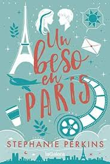
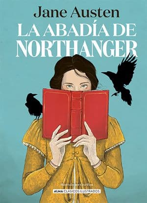
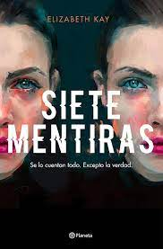
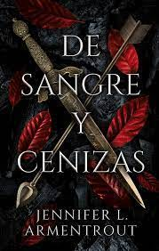

GENEROS LITERARIOS MAS DEMANDADOS
ROMANCE JUVENIL: Te hacen vivir un intenso amor de verano, enamorarte de sus protagonistas, llorar, reír y aprender.

CLASICOS: Obra considerada valiosa que perdura a través del tiempo, casi un modelo en su género, es un libro que permanece en el gusto del público durante años.

THRILLER:Obra literaria de ficción en la que se hace un mayor hincapié en la tensión, pretende mantener al lector en expectativa, en estado de tensión y preocupado por lo que pueda ocurrirles a los personajes durante la narración.

FANTASIA: Relato en que participan fenomenos sobrenaturales y extraordinarios, como la magia o la intervencion de criaturas inexistentes.
